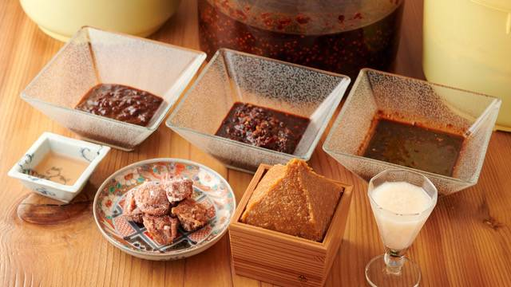
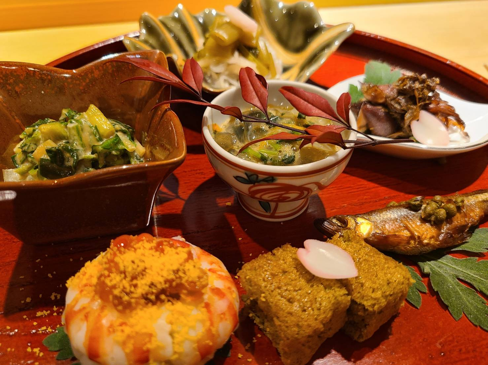

01
化学調味料
完全不使用
グルタミン酸ナトリウム等の化学調味料は一切使用しません。 素材と発酵調味料だけが生み出す、純粋なうま味をお届けします。
FERMENTED JAPANESE CUISINE
化学調味料不使用。自家製の生麹甘酒・醤・醤油もろみ——
100種類以上の酵素が素材の力を引き出す、
自然の恵みそのままの日本料理。
発酵調味料と職人の技が織りなす、
体に優しく、真心のこもった一皿。

OUR PHILOSOPHY
楽只が大切にしているのは、菌の力をそのまま食卓へ届けること。
火入れをせず生きたまま使う麹甘酒、長年かけて熟成させた醤（ひしお）、
醤油もろみ——自然が生み出す100種類以上の分解酵素が、
素材本来の旨みを最大限に引き出します。
化学調味料は一切使用しません。素材の力と、菌の働きだけが、 楽只の味の源です。消化に優しく、体が喜ぶ、 本物の日本料理をぜひご堪能ください。
お品書きを見るOUR COMMITMENT
グルタミン酸ナトリウム等の化学調味料は一切使用しません。 素材と発酵調味料だけが生み出す、純粋なうま味をお届けします。
生麹甘酒・醤（ひしお）・醤油もろみ——すべて店主が手仕事で仕込む 自家製。火入れをせず菌を活かしたまま使用します。
100種類以上の分解酵素が食材をあらかじめ分解。 胃腸への負担が少なく、食後も体が軽い——それが発酵料理の力です。
MASTER CHEF
楽只の店主は、板前歴約30年のベテラン職人。 日本料理の伝統技法を土台に、独自に研究を重ねてきた 発酵の世界へと踏み込みました。
「おいしいだけでなく、食べた後の体が喜ぶ料理を作りたい」—— その一心で仕込む自家製の醸造物は、季節とともに表情を変え、 一品一品に静かな物語を宿します。
横浜・高島町の路地の奥、静かな空間で 本物のうま味との出会いをお楽しみください。
SEASONAL SPECIAL
楽只のおせちは、「発酵」を生かした特別なおせち料理でございます。
下処理や味付けには自家製の生麹甘酒、醤（ひしお）、醤油もろみなど、伝統的な方法でしっかりと熟成・発酵させた本物の調味料を使用しております。
麹菌には、アミラーゼ・プロテアーゼ・リパーゼをはじめ、100種類以上もの分解酵素が含まれております。
当店では、火入れをしていない生の麹甘酒や醤、醤油もろみの酵素の働きを生かすことで、食材をやさしく分解し、素材本来の旨みをより一層引き出します。
また、食材があらかじめ分解されているため、体内の消化酵素を多く使わずにすみ、身体にやさしく消化にも良いおせち料理となっております。
新しい一年を健やかにお過ごしいただけますよう、願いを込めて毎年お作りしております。
きちんと熟成された伝統的な調味料と、自家製の生麹甘酒、火入れをしていない生醤油や醤などを使用した貴重な発酵おせち料理です。
冷凍ではなく、作りたてを冷蔵の状態でお届けいたします。
（店頭受け取り・発送ともに冷蔵）
長年培ってきた技術と経験を生かし、一品一品丁寧にお作りしております。

「これ三段分あるのでは？」
お客様からこう言われるほど、ぎっしりと詰めたお重です。
発送でも寄れることのないよう丁寧にお詰めしております。
一段重・二段重ともに、しっかりと詰めておりますのでご安心ください。
2名様分
4〜5名様分
長年信頼できる後輩料理人と共に、
後輩の店（茨城）をお借りして共同で仕込みを行っております。
毎年、冷蔵庫のような環境の中で数日間かけて丁寧に作り上げております。
おかげさまでリピート率は90％以上。
毎年約1か月ほどで完売となるため、
昨年度ご購入いただいたお客様には
9月中旬頃に先行案内をお送りしております。
ご新規のお客様は10月1日よりご予約開始となります。
少人数での手作りのため数に限りがございます。
また、限定食材やお重箱の発注の都合もございますので
締め切り：11月30日
となりますが、先着順のため数量に達し次第締め切りとさせていただきます。
何卒お早めのご予約をお願い申し上げます。
GALLERY

INFORMATION
| 店名 | 日本料理 楽只（らくし） |
|---|---|
| 住所 | 〒220-0023 神奈川県横浜市西区平沼1丁目4-9 |
| 電話 | 045-311-2272 |
| 営業時間 |
火〜土｜ 18:00 – 22:30 日｜ 12:00 – 14:30 月曜定休 |
| アクセス |
横浜駅 徒歩10分 横浜市営地下鉄ブルーライン 高島町駅 徒歩5分 |
| ご予約 | 一休.comにて承り中 |